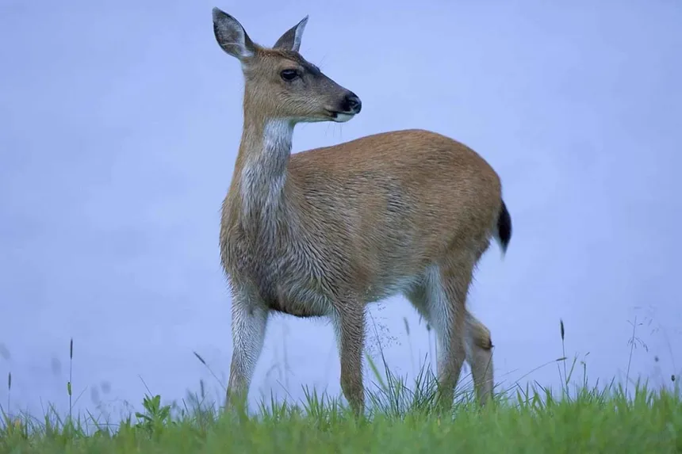
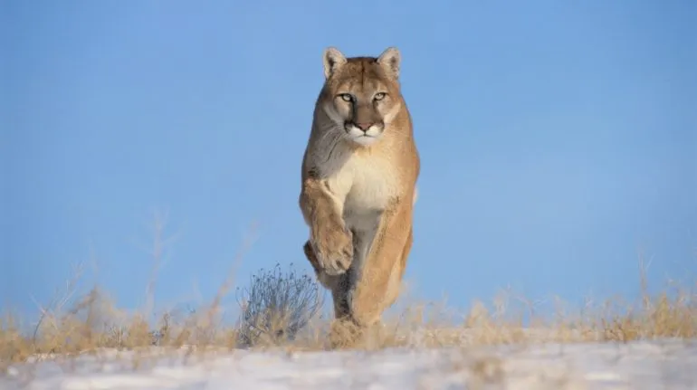

El águila real es un majestuoso rapaz con plumaje marrón oscuro, cabeza dorada y garras poderosas, símbolo nacional de México.

Venado cola blanca
El venado cola blanca es un cérvido de América con pelaje marrón, cola blanca y astas en los machos, grácil y esbelto.

Puma
El puma mexicano, también conocido como puma del este, es un felino robusto y ágil de pelaje dorado y ojos penetrantes, ahora en peligro crítico.
La fauna de Chihuahua, México, es diversa y adaptada a su variado entorno. Incluye mamíferos como el puma, el venado cola blanca, el coyote y el oso negro. Además, hay aves como el águila real y el buitre negro. En los ríos y arroyos se encuentran especies de peces, como la trucha.